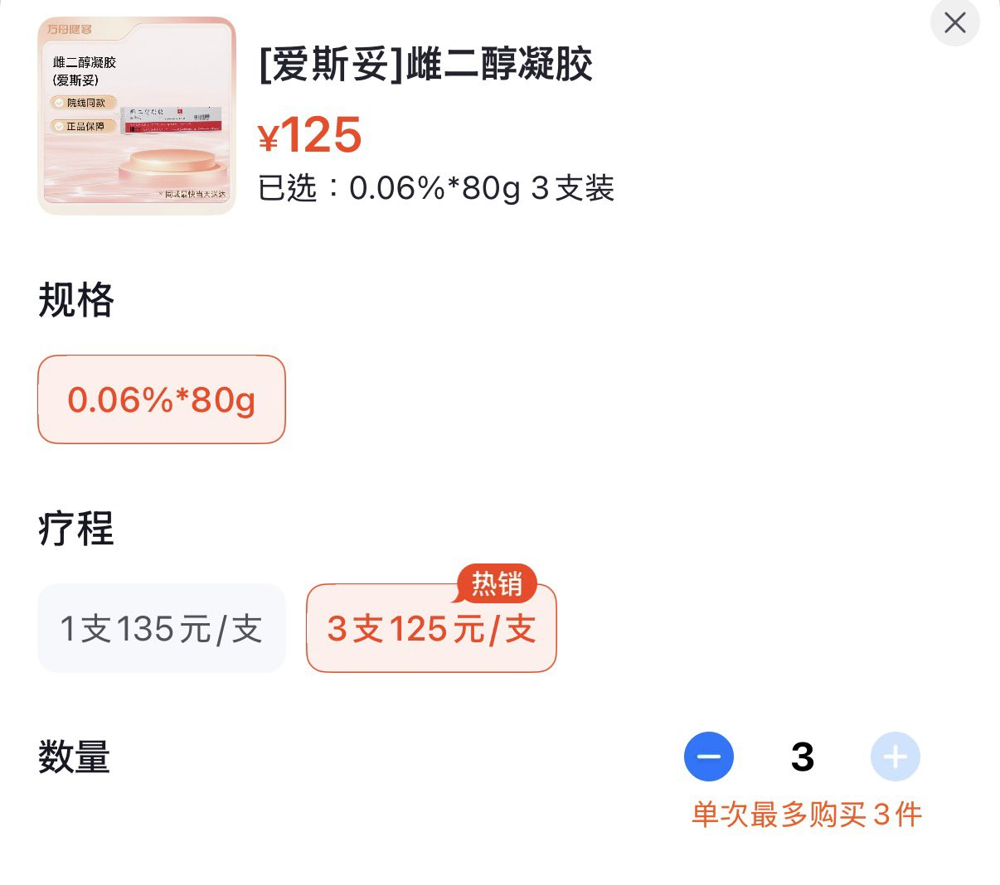

たたなこ
@tatanakots
@ServalCandle ttnk没钱的时候会去医院开免费的国补，我们这边没有凝胶
但是现在医院貌似不太想给我开免费的国补了，疑似已被医保局制裁

🌸猫宮すみか🎀
@ServalCandle
笨猫作为中国mtf的决择
去正规医院开药，挂号药物是免费的，但是很麻烦要做检查，要线下去医院
出门真的很累
而且似乎最多只能开一个月的量
因此也就三支凝胶
或者直接在网上下单买三支，寄到家里啥也不用干
要自己花钱没有医保，超级贵_(:з」∠)_
很好奇大家一般要免费药，还是花钱但是轻松 https://t.co/34phnHWxLu https://t.co/WhNoDJ8ZBy